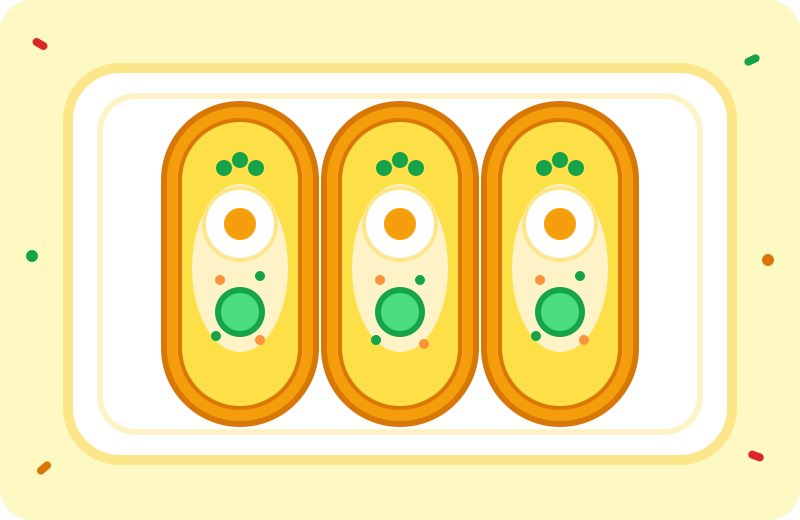

Silvestrovský chlebíček
Suroviny
- 12 dětských piškotů (místo veky)
- 1 kelímek Perly
- 200 g vlašského salátu z lahůdek
- 3 vejce natvrdo
- 1 kyselá okurka
- petrželka, aby to bylo slavnostní
Postup
- Piškoty položte rovnou stranou nahoru a potřete Perlou až k okraji.
- Na každý dejte lžičku vlašského salátu a uhlaďte ho do kopečku.
- Navrch položte kolečko vejce, kolečko okurky a lístek petrželky.
- Přikryjte utěrkou a uložte do lednice do příchodu hostů.
Tip šéfkuchaře: Na jeden piškot patří jedno kolečko vejce. Dvě už jsou rozmařilost.